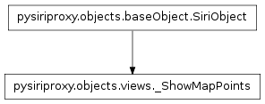
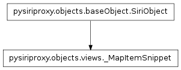
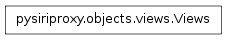
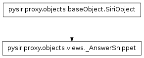
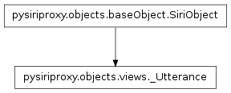

The views module¶
The views module contains classes pertaining to creating objects which can be sent to the iPhone or Apple’s web server which pertain to creating views on the iPhone.
The _ShowMapPoints class¶

The _MapItemSnippet class¶

The Views class¶

- class pysiriproxy.objects.views.Views[source]¶
Contains the various types of Views as well as a function for creating Views of a specific type.
This class also contains a factory method for creating views of a specific type.
- AddViews¶
The AddViews object type.
- AnswerSnippet¶
The AnswerSnippet object type.
- MapItemSnippet¶
The MapItemSnippet object type.
- MapPoints¶
The ShowMapPoints object type.
- Utterance¶
The Utterance object type.
The _AnswerSnippet class¶

The SiriObject class¶

- class pysiriproxy.objects.views.SiriObject(className, group)¶
The SiriObject class encapsulates the base functionality for all object being sent to the iPhone or to Apple’s web server.
Note
This class is meant to be subclassed to provide the implementation for a specific object.
- ProtocolVersion¶
The identifier which indicates the version of the protocol.
- classmethod isArgumentList(obj)¶
Determine if the given object is a list of arguments, or not.
- obj – The object
- classmethod isSiriObject(obj)¶
Determine if the given object is a SiriObject, or not.
- obj – The object
- makeRoot(refId=None, aceId=None)¶
Make the SiriObject the root object.
- refId – The refId for this object
- aceId – The aceId for this object
- setAceId(aceId=None)¶
Set the ace id for this object.
- aceId – The aceId for this object
- setNonNoneArguments(argumentNames, localVars)¶
Takes a list of strings which represent names of input variables and sets properties of the same name on the current object if the value of the argument is not None.
- argumentNames – The list of argument names to set
- localVars – The local variables
- setRefId(refId=None)¶
Set the ref id for this object.
- refId – The refId for this object
- toDict()¶
Convert this object into a Python dictionary.
The _Utterance class¶
